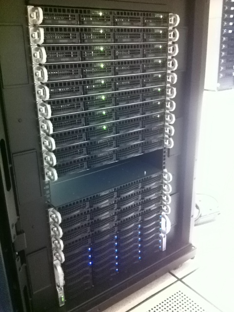
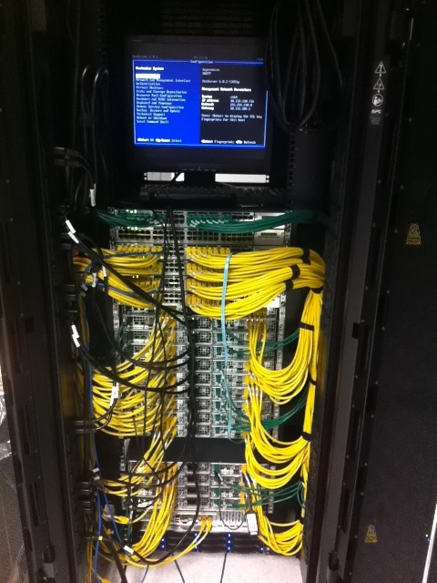

Your browser doesn't support the features required by impress.js, so you are presented with a simplified version of this presentation.
For the best experience please use the latest Chrome, Safari or Firefox browser.
Four options for building a cloud orchestration layer:
- "The Big IT Software Guys"
- "Cloud in a Box" Commercial Software
- Open Source Options
- Roll Our Own
We rolled our own and launched a BETA service.
- The service went GA
- Development continued on our own orchestration framework
- Multiple cloud regions brought online and capacity started growing
- New feature development focused on "higher level" services <- This is where we want to spend our time!
- OSS IaaS projects had started maturing rapidly
- Licenses started to change
- Alliances were formed
- Foundations are being created
We needed to step back a bit and assess some options...
So we decided to try out a few options!
"Stack Wars"
OpenStack / CloudStack / OpenNebula
So we got ourselves a rack of gear: 

And plugged some stuff in...
And then we tested some stacks...
- Installed, configured and tested each option
- Reviewed the state of each project (community activity, governance, licensing, etc...)
- Dug into the code itself
OpenStack (Diablo Release)
- Apache 2
- Similar Architecture / Language to Us
(Python, AMQP, Highly Distributed)
- "Building Block" Style
- Tested some commercial distros
- Governance model remained unknown (headed towards OS Foundation)
- Clearly still maturing (quality / features / operational experience)
OpenNebula
- Apache 2
- C++ / Ruby
- VMware support was challenging to configure
- Governance managed by C12G Labs
- Really liked the concept of growing into EC2
CloudStack
- GPL
- Java / Python
- Governance managed by Citrix
- Installation and configuration was very easy
- Code / feature quality was high
- Service Providers using it in Production
Then Citrix gave CloudStack to the Apache Software Foundation...
This change made a huge difference for us.
So what are we doing with CloudStack now?
We'll have our first CloudStack-based service in production by the end of the year.
We've started planning what features we can contribute to CloudStack:
Likely focused on Disaster Recovery and Managed Services.
We're hosting events like this.
It's been kind of fun...